Yash Patel, 201301134 %%
CSE, IIIT-H %
Contents
Question-1
clc clear all % Read the image. % [img map] = imread('octone.gif'); % Convert this to jpg image. % if ~isempty(map), img = ind2rgb(img, map); end % Convert image from rgb to hsv % im = rgb2hsv(img); % Take hue, saturation and value % im_hue = round(im(:,:,1)*360); im_saturation = im(:,:,2); im_value = im(:,:,3); % Set min and max hue values for Yellow.% yellow_min = 57; yellow_max = 90; % Get binary image corresponting to yellow range. % yellow = ((im_hue>yellow_min)&(im_hue<=yellow_max)); % Make corresponding RGB image. % RGB = zeros(size(im,1), size(im,2), 3); RGB(:, :, 1) = yellow; RGB(:, :, 2) = yellow; RGB(:, :, 3) = 0.3*yellow; figure, imshow(RGB)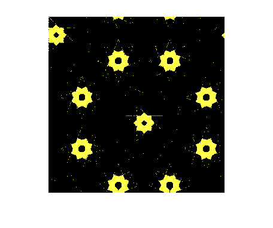
Question-2
clc clear all % Read circle image. % im = imread('circles.jpg'); % Convert image to gray scale image. % im = rgb2gray(im); im = im2bw(im,0.4); im_bw_pre = zeros(size(im)); nums = zeros(15,2); % Vary over suitable radius size and apply top-hat filter. % for i=3:12 % Take the structuring element as circle. % se = strel('disk',i); % Apply Top-Hat Filter. % im_th = imtophat(im,se); % Convert to binary image. % im_bw = im_th - im_bw_pre; % Remove salt pepper noise for this. % im_bw = medfilt2(im_bw, [5,5]); % Show this image. % figure, imshow(im_bw) % Save im pre as this im bw for next iteration. % im_bw_pre = im_th; % Count the connected components. % [l num] = bwlabel(im_bw); % Store in array. % nums(i-2,1) = i; nums(i-2,2) = num; end % Print nums. % nums
nums =
3 43
4 27
5 63
6 41
7 35
8 20
9 39
10 34
11 1
12 0
0 0
0 0
0 0
0 0
0 0
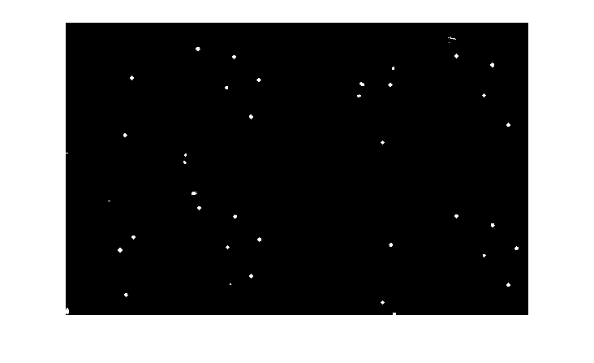 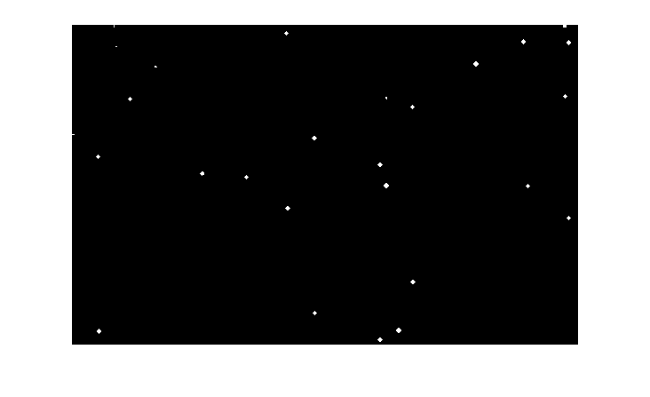 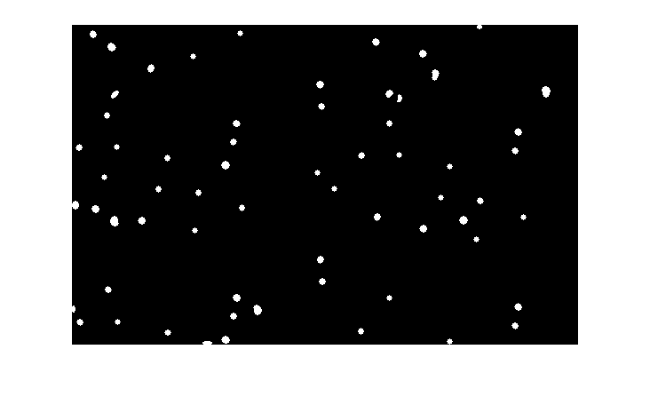 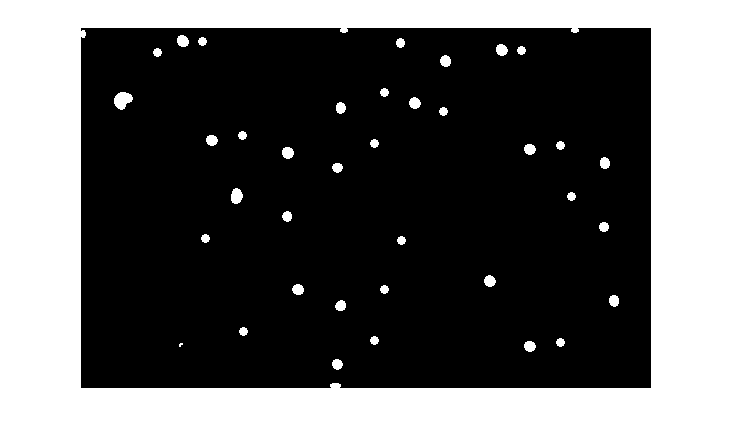 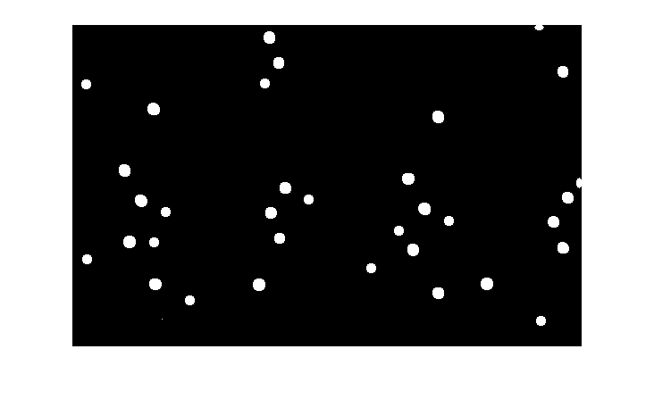 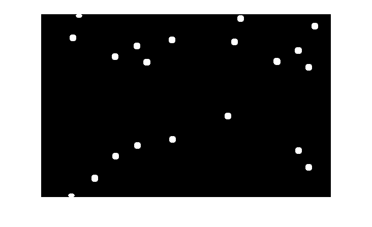 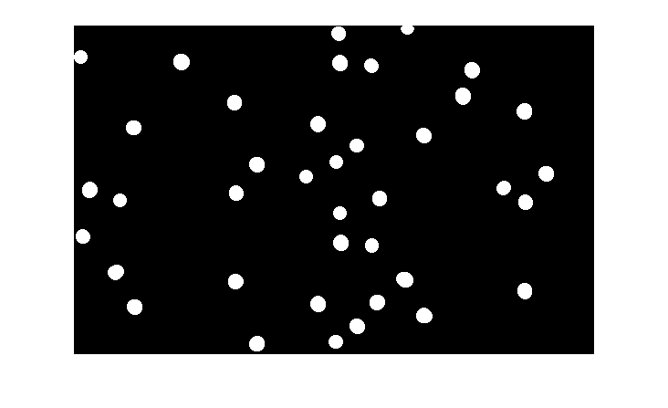 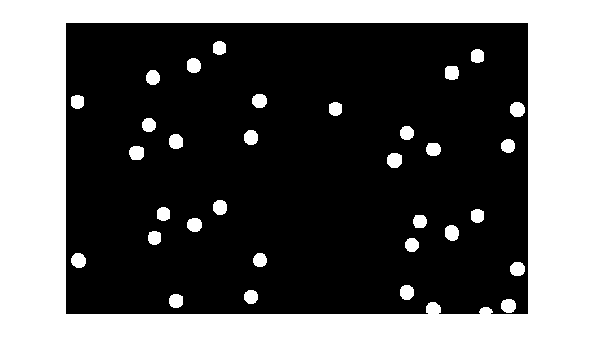 Question-3
clc clear all % Read the foreground image. % im_f = imread('question3_fg.jpg'); figure, imshow(im_f) % Read the background image. % im_b = imread('question3_bg.jpg'); figure, imshow(im_b) % Set values according to background in foreground image. % im_f_ext_indexes = (((im_f(:,:,1)>15) & (im_f(:,:,2)<240)) | ((im_f(:,:,1)>200) & (im_f(:,:,2)>200) & (im_f(:,:,3)>200))); im_f_ext = cat(3,im_f_ext_indexes,im_f_ext_indexes, im_f_ext_indexes); % Keep original value of only indexes specified rest all zero. % im_f = uint8(double(im_f).*double(im_f_ext)); % Get size of fg image. % im_f_size = size(im_f); % Resize background image, according to fg image. % im_b = imresize(im_b, [im_f_size(1), im_f_size(2)]); % find modified bg image. % im_f_ext = not(im_f_ext); im_final = uint8(double(im_b).*double(im_f_ext)); % add both images. % im_final = im_final + im_f; figure, imshow(im_final)
Warning: Image is too big to fit on screen; displaying at 67%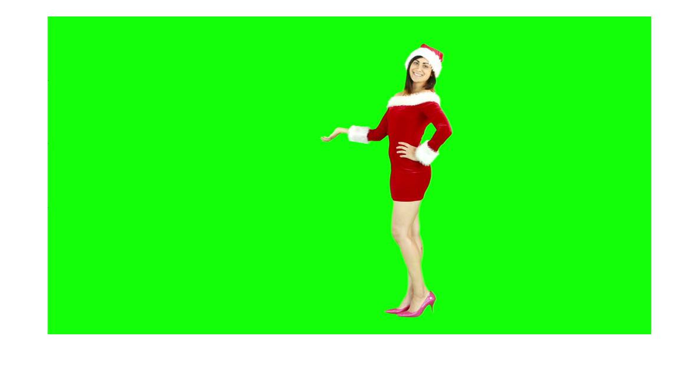 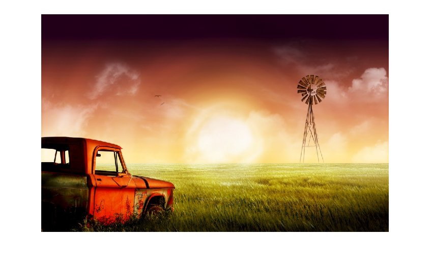 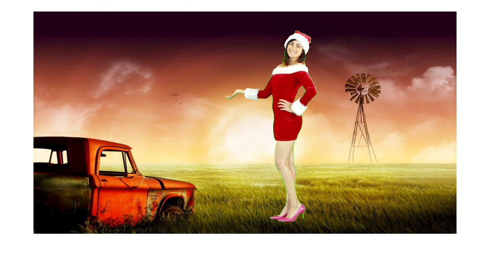
Question-4a
clc clear all % Read the world map. % im = double(imread('map.gif')); % Take image size. % im_size = size(im); % Compute the breadth and length of map. % breadth = im_size(2)/2; length = im_size(1)/2; % Max and Min variations of breadth possible. % breadth_min_d = -1; breadth_max_d = 1; % Max and Min variations of lengths. % length_min_d = -pi/2; length_max_d = pi/2; % Ranges as per function for breadth. % breadth_min_r = -1; breadth_max_r = 1; % Ranges as per function for length. % length_min_r = -1; length_max_r = 1; % Number of steps size of breadth. % breadth_step_o = ( breadth_max_d - breadth_min_d ) /(breadth*2); % Number of steps size of length. % length_step_o = ( length_max_d - length_min_d ) /(length*2); % Steps size of breadth in transformed image. % breadth_step_n = ( breadth_max_r - breadth_min_r ) /(breadth*2); % Steps size of length in transformed image. % length_step_n = ( length_max_r - length_min_r ) /(length*2); % Old x and y in image, according to domain parameters. % [x_o y_o] = meshgrid(breadth_min_d + breadth_step_o : breadth_step_o : breadth_max_d... , length_min_d + length_step_o : length_step_o : length_max_d ); % New x and y in image, according to range parameters. % [x_n y_n] = meshgrid(breadth_min_r + breadth_step_n : breadth_step_n : breadth_max_r... , length_min_r + length_step_n : length_step_n : length_max_r ); % Inerse Transformation of coordinates. % im_o_x = x_n; im_o_y = asin( y_n ); % Interpolate the values from neighbours of corresponding old image pixel % img_final = interp2 (x_o, y_o, im, im_o_x, im_o_y ); figure, imshow(im); title('Normal World Map'); figure, imshow(img_final); title('Cylindrical projection of World Map');
Warning: Image is too big to fit on screen; displaying at 67% Warning: Image is too big to fit on screen; displaying at 67%
Question-4b
clc clear all % Read the world map. % im = double(imread('map.gif')); % Take image size. % im_size = size(im); % Compute the breadth and length of map. % breadth = im_size(2)/2; length = im_size(1)/2; del=0.1; % Max and Min variations of breadth possible. % breadth_min_d = -1; breadth_max_d = 1; % Max and Min variations of lengths. % length_min_d = -pi/(2+del); length_max_d = pi/(2+del); % Ranges as per function for breadth. % breadth_min_r = -1; breadth_max_r = 1; % Ranges as per function for length. % length_min_r = log(tan(-pi/2/(2+del)+pi/4)); length_max_r = log(tan(pi/2/(2+del)+pi/4)); % Number of steps size of breadth. % breadth_step_o = (breadth_max_d - breadth_min_d)/(breadth*2); % Number of steps size of length. % length_step_o = (length_max_d - length_min_d)/(length*2); % Steps size of breadth in transformed image. % breadth_step_n = (breadth_max_r - breadth_min_r)/(breadth*2); % Steps size of length in transformed image. % length_step_n = (length_max_r - length_min_r)/(length*2); % Old x and y in image, according to domain parameters. % [ x_o y_o ] = meshgrid( breadth_min_d + breadth_step_o : breadth_step_o : breadth_max_d... , length_min_d + length_step_o : length_step_o : length_max_d ); % New x and y in image, according to range parameters. % [ x_n y_n ] = meshgrid( breadth_min_r + breadth_step_n : breadth_step_n : breadth_max_r... , length_min_r + length_step_n :length_step_n : length_max_r ); % Inerse Transformation of coordinates. % im_o_x = x_n; im_o_y = 2*(atan(exp(y_n))-pi/4); % Interpolate the values from neighbours of corresponding old image pixel % img_final_2 = interp2 (x_o, y_o, im, im_o_x, im_o_y ); figure; imshow(img_final_2); title('Mercartor-projection of World Map');